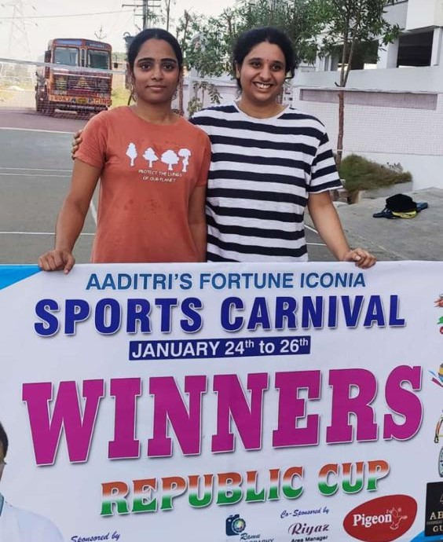

My Hobbies

Badminton is my favorite sport because playing it makes me stay active throughout the day.I play badminton with my friends, I feel energetic throughout the day.
I started playing badminton when i was 10 years old.My dad was a professional player,and he kept encouraging me to join him during his practice sessions.

I always love to paint the pots and waste plastic boxes.I would love to recycle them.When you think about the huge amounts of plastics we produce and the problems that can occur when we try to Disposal of plastic,
it makes sense to reuse or recycle what we can.